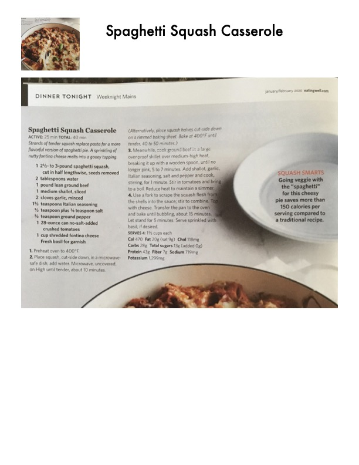

Spaghetti Squash Casserole

Original cookbook page 53
Strands of tender squash replace pasta for a more flavorful version of spaghetti pie. A sprinkling of nutty fontina cheese melts into a gooey topping.
Prep: 25 minutes • Cook: 15 minutes • Total: 40 minutes
Ingredients
- 1 2½- to 3-pound spaghetti squash, cut in half lengthwise, seeds removed
- 2 tablespoons water
- 1 pound lean ground beef
- 1 medium shallot, sliced
- 2 cloves garlic, minced
- 1½ teaspoons Italian seasoning
- ½ teaspoon plus ¼ teaspoon salt
- ¼ teaspoon ground pepper
- 1 28-ounce can no-salt-added crushed tomatoes
- 1 cup shredded fontina cheese
- Fresh basil for garnish
Instructions
- Preheat oven to 400°F.
- Place squash, cut-side down, in a microwave-safe dish; add water. Microwave, uncovered, on High until tender, about 10 minutes. (Alternatively, place squash halves cut-side down on a rimmed baking sheet. Bake at 400°F until tender, 40 to 50 minutes.)
- Meanwhile, cook ground beef in a large ovenproof skillet over medium-high heat, breaking it up with a wooden spoon, until no longer pink, 5 to 7 minutes. Add shallot, garlic, Italian seasoning, salt and pepper and cook, stirring, for 1 minute. Stir in tomatoes and bring to a boil. Reduce heat to maintain a simmer.
- Use a fork to scrape the squash flesh from the shells into the sauce; stir to combine. Top with cheese. Transfer the pan to the oven and bake until bubbling, about 15 minutes. Let stand for 5 minutes. Serve sprinkled with basil, if desired.
Recipe #53 from collection